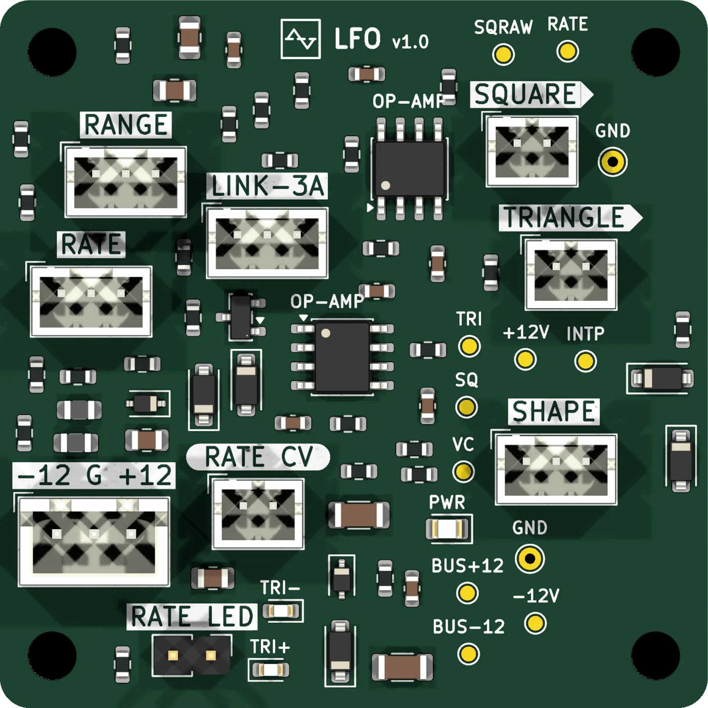
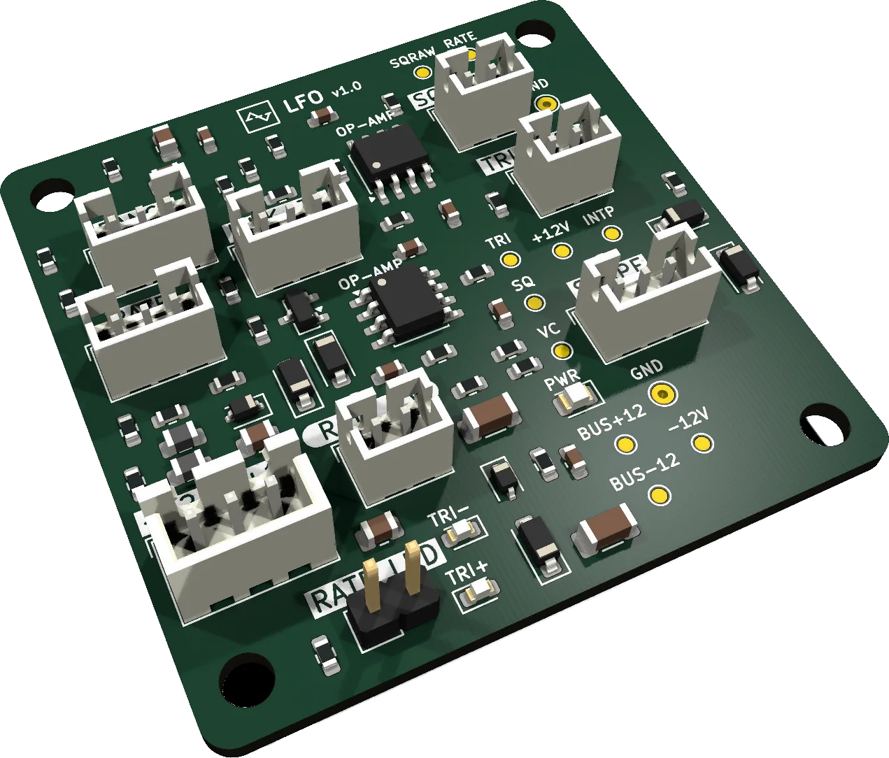
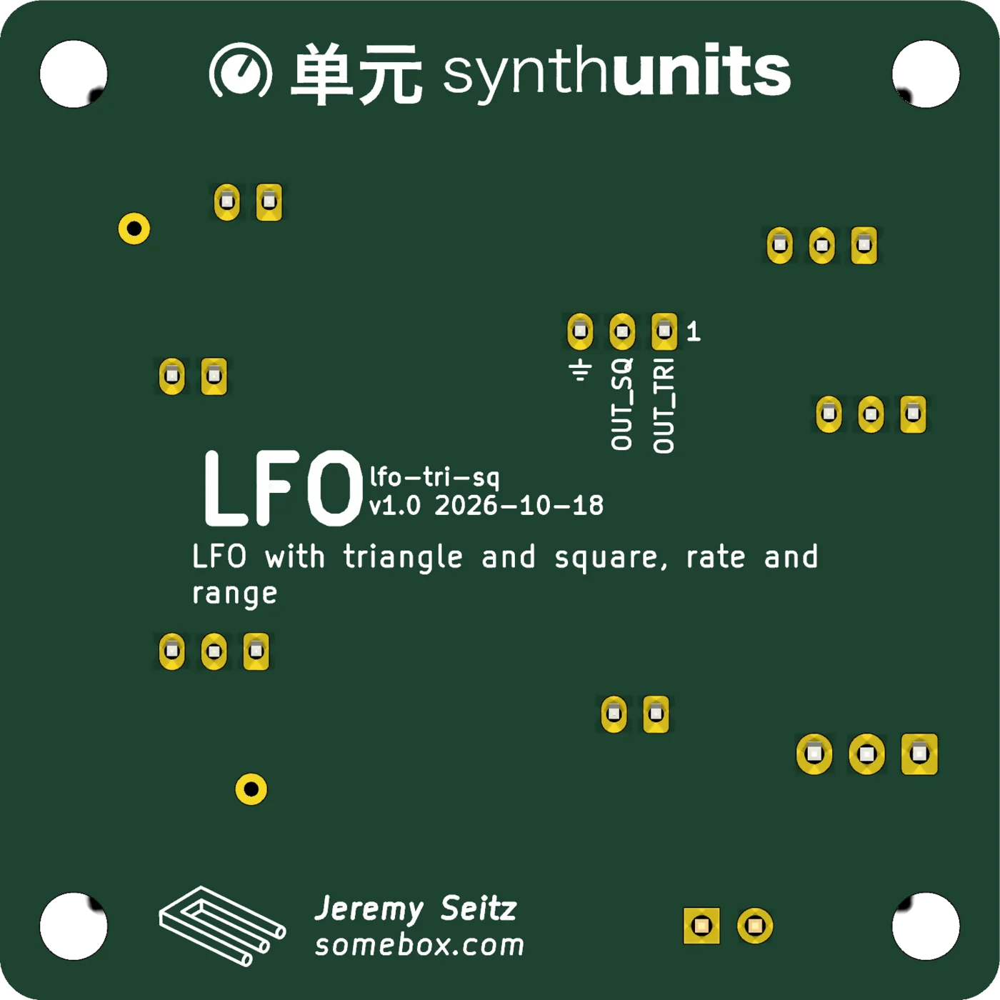

LFO: triangle and square, rate and range
A voltage-controlled LFO with triangle and square, from 0.06 Hz up into audio, with a ramp and saw switch.
A voltage-controlled LFO with a triangle and a square, on a 47.5 × 47.5 mm board. It is the textbook loop on a dual op-amp: an integrator ramps until a Schmitt trigger flips, and the Schmitt's output turns the ramp around. Here both slopes come from one control voltage, with a small FET switching one of them, so a RATE CV input adds to the RATE knob and the frequency stays linear in it.
A RANGE switch gives SLOW (about 0.06 to 11 Hz) or FAST (13 Hz to 2.4 kHz, into audio), and a SHAPE switch turns the triangle into a rising ramp or a falling saw by making one slope fast.
In a patch: vibrato and sweeps, a clock for a sample and hold, or in FAST a hard-sync master or an FM source for the VCO.
- Status
- In design: parts placed, not routed yet
- Board
- 47.5 × 47.5 mm, 2 layers
- Progress
- follow its tracking issue



Block diagram
Drawn by the site's generator from the board's own data: its blocks, its connectors and the links between them. The pots and switches are listed in the block they set.
What it does
- Outputs: TRIANGLE about ±5 V, SQUARE about ±5.3 V, through 1 kΩ.
- Range: SLOW about 0.06 to 11 Hz, FAST 13 Hz to 2.4 kHz (simulated); RATE is an Alpha 9 mm A10K for an even sweep.
- RATE CV: 44 kΩ, linear in frequency. With RATE at a quarter (about 600 Hz in FAST), +5 V takes it to 1.1 kHz and −3 V to 280 Hz. A negative CV slows it to its floor; it never stops or reverses.
- SHAPE: triangle (centre), RAMP (up) or SAW (down). In RAMP and SAW the rate about doubles and SQUARE becomes a narrow pulse, which still clocks a sample and hold.
- The rate follows the +12 V rail: 1 % of rail is 1 % of rate.
- Power: under 10 mA on each rail plus the LEDs, estimated.
- Board: 47.5 × 47.5 mm, 2 layers, four M3 holes.
Connections
| Connector | Wire to | Housing | Pins |
|---|---|---|---|
| RATE (A10K) | a pot (Alpha 9 mm A10K) | JST PH, 3 pins, top entry | 1 CCW, 2 wiper, 3 CW |
| RANGE (DW1: A = SLOW) | a toggle switch | JST PH, 3 pins, top entry | 1 A, 2 common, 3 B |
| SQUARE OUT | a jack (Thonkiconn) | JST PH, 2 pins, top entry | 1 tip, 2 GND |
| TRIANGLE OUT | a jack (Thonkiconn) | JST PH, 2 pins, top entry | 1 tip, 2 GND |
| SHAPE SWITCH (DW2 on-off-on: up RAMP, down SAW) | a toggle switch | JST PH, 3 pins, top entry | 1 A, 2 common, 3 B |
| RATE CV | a jack (Thonkiconn) | JST PH, 2 pins, top entry | 1 tip, 2 GND |
| POWER (1 -12V, 2 GND, 3 +12V) | a the power board output (straight-through JST XH lead) | JST XH, 3 pins, top entry | 1 −12 V, 2 GND, 3 +12 V |
| LINK | a lead to another module, or open | JST PH, 3 pins, top entry | 1 OUT_TRI, 2 OUT_SQ, 3 GND |
Every panel control has its own connector with a fixed pinout, so any lead of the right size fits any module. Pin 1 is the square pad.
LEDs
On the board: TRI+ (yellow), TRI- (red), PWR (green). Pads for a panel LED: RATE LED.
Wiring and setup
- Power: a 3-pin JST XH lead (1 −12 V, 2 GND, 3 +12 V) from one of the power hub's outputs, with a ferrite and a series Schottky on each rail. Check each lead with a meter first.
- Panel: 3 jacks (RATE CV, TRIANGLE OUT, SQUARE OUT), an Alpha 9 mm A10K pot (RATE), an on-on toggle (RANGE: SLOW or FAST) and an on-off-on toggle (SHAPE: up RAMP, down SAW). Each has its own top-entry JST PH connector: jacks 2-pin (1 tip, 2 GND), the pot and toggles 3-pin.
- Keep the RANGE toggle's lead short: it puts a capacitor on the integrator's summing node at the end of a wire.
- RATE LED pads: fed from the square's positive half through their own resistor and diode, so a single 3 mm LED blinks at the rate. The on-board TRI+ and TRI− LEDs show the triangle's two halves.
- LINK-3A: 1 triangle, 2 square (before their 1 kΩ), 3 GND.
- No trimmers: nothing to calibrate.
Limits and open questions
- A placement mockup: the parts are placed, the board isn't routed. Not built.
- The timing capacitors are ceramic: the rate drifts a little with temperature, and the SLOW range's large capacitor loses some of its value under bias. The simulations use nominal values.
- A fast step in RATE CV moves the triangle by half the step, so audio-rate CV into RATE CV adds itself, halved, to the triangle.
- In RAMP and SAW the fast edge overshoots the other peak by about 1 V.
- The rate LED loads the raw square, which shifts its amplitude and symmetry a little; a later revision drives it from the buffered output.
- An unpatched RATE CV jack runs about 4 % faster than a patched 0 V.
Development notes
- At first the rate pot divided the square ahead of the integrator: the same ranges, but no CV. The voltage-controlled core follows the idea of tkilla64's vc-lfo (MIT), both slopes from one control voltage with a FET switching one; I redrew it and chose the values for ±5 V and parts the board house stocks.
- The FAST range reaches 2.4 kHz so the LFO can be the VCO's sync master or an audio-rate FM source. The SHAPE switch is an idea from the MFOS Sound Lab Mini-Synth's LFO.
- Next: route it once the first boards are built and proven.
Schematic
The schematic as drawn, with each chip named by its function rather than its part number. The design isn't open source yet, so there are no files to download.


Would you use a LFO? A thumbs-up on its tracking issue is how I count interest, and you can subscribe there to follow its bring-up. Questions and ideas go to the discussions.